위 문제를 풀기위해 direct method만 지금까지 다루었지만,
사실 연산량 측면에서는 Iterative Method가 더 이득이다.
(Large sparse Matrix인 경우 특히 더)

Iteartive Method의 큰 틀
은 간단하다.
"우리는 정확한 해를 모른다"
"그러니까 우리가 연산을 계속해서
iteratively 해를 업데이트
를
특정 규칙
으로 진행을 할껀데,
만약에 해의 업데이트가 안되는 순간이 더이상 해가 바뀌지않는 순간이고 이때를
수렴한 해
라고 하자."

위 틀안에서
Iterative Method
는 다음 두가지로 나뉘고, (고전적인 방법과 현대적인 방법)
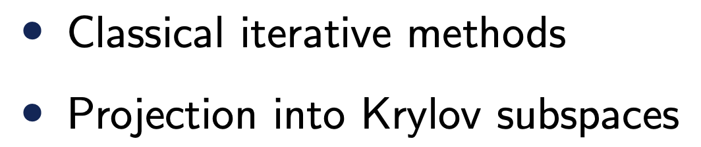
이번 시간(part1)에서는 Classical iterative Methods를 살펴보자.
iterative Method의 자세한 흐름은 다음과 같다.
1. Set Initial solution
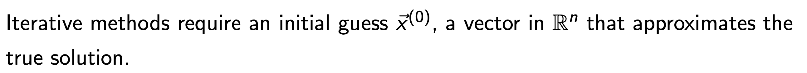
2. Update the solution(we'll learn how to update them)
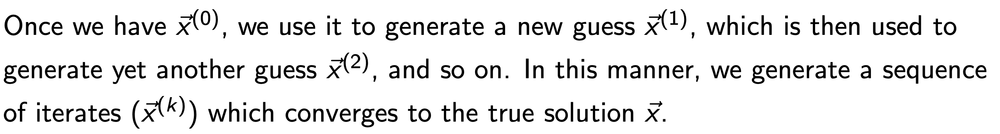
3. Stop the iteration when the soltuion converges
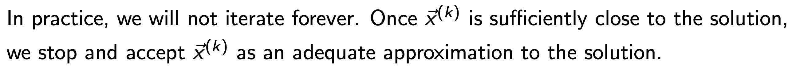
해를 업데이트 하는 방식을 지금부터 살펴보자.
1. Jacobi Method
우리가 풀고자하는 위 문제에서 i번째 b벡터 요소는 다음과 같이 표현된다.

여기서 i = j 인 x요소만 남기고 전부 우항으로 넘겨주면,
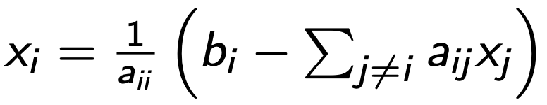
위 식을 가지고 우리는 x를 업데이트 할 것이다.
즉, xi를 업데이트 할때 우리는 주변 다른 index i != j 인 x를 가지고 업데이트 하는 것.
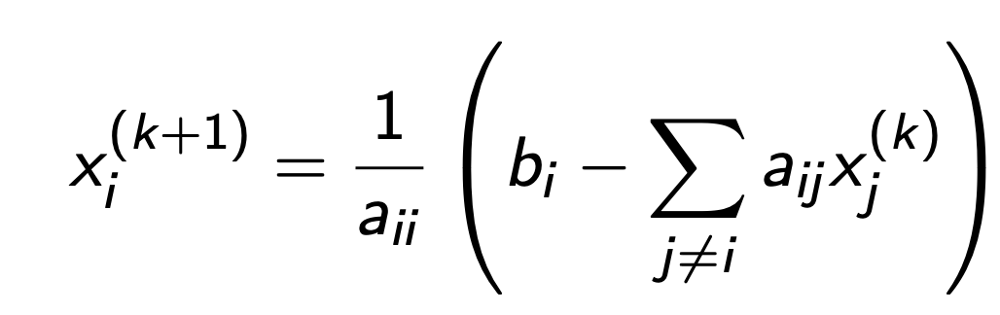
x(k) -> k 번째 iteration 해 , x(k+1) -> k+1 번째 iteration 해.
즉, 해를 아래와 같이 계속 순차적으로 업데이트 하는 것.
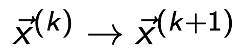
2. Gauss - seidal method.
jacobi method를 잘생각을 해보면,
x1 , x2, x3 ... xn 을 순차적으로 업데이트를 할 것이다.
잘생각해보면, x2를 업데이트 하는 순간, x1은 이미 업데이트가 되어있다.
jacobi method에서
x2를 업데이트 할때 x1이 필요한데, 이
때 x1은
방금직전에 업데이트를 한 후의 x1 updated가 아닌
이전의 x1 .
이와 반대로 Gauss seidal method에서는 업데이트된 값을 사용한다.
k 번째 해를 k+1번째 해로 업데이트 하는 과정을 생각해보자.
xi 를 업데이트 할, x1,x2...xi-1, xi+1.... xn의 모든 요소들이 필요하다.
여기서 순차적으로 업데이트를 하기 때문에 아래의 x1,x2,....x (i-1)은 이미 업데이트 값이 존재한다.

Gauss - seidal method는 xi (k) -> xi (k+1)을 할때, 업데이트된 값들이 있으면
업데이트된 값들을 사용한다는 것이다.

(위 논리를 수학식으로 표현하면 위와 같다)
3. SOR ( successive overelaxation Method)
SOR방법은 Jacobi method처럼 업데이트 이전의 해를 사용하지만,
중요한 것은 xk -> xk+1로 대규모 업데이트를 하는 것이 아니라,
w라는 인자를 사용해서 부분 업데이트를 다음과 같이 진행한다.
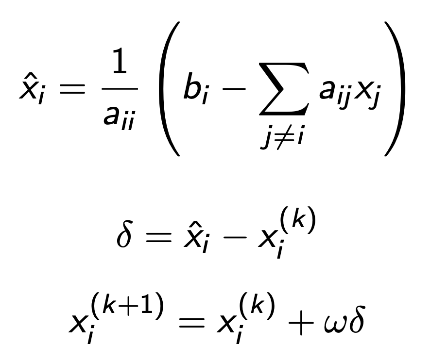
(쉽게 말해 이전해를 반영)
놀라운 사실은 위 3가지 방식을 일반화할 수 있다.
여기서 Ax = b를 다음과 같이 component base로 표현해주자.

Splitting Method(그냥 A를 두개의 Matrix로 분리, 단 M은 nonsingular Matrix)

위 분리된 A를 Ax = b식에 대입해주면,

위 식을 그대로 iterative method에 적용해주자.

우리는 M을 non singular Matrix로 정의했기 때문에, M은 역행렬이 존재하므로
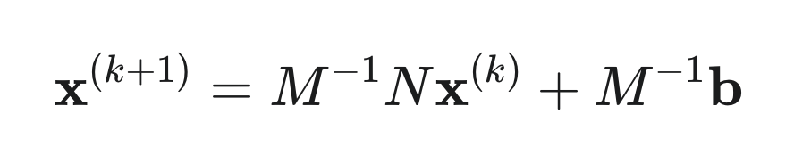
따라서, 다음과 같이 B = M-1N으로 정리 가능하다.

여기서 위 iterative method의 수렴성을 판단하기 위해 다음과 같이 k번째 error vector를 정의하자.

여기서 x는 밑의 우리가 풀고자하는 식을 만족하는 True해 이고.

x k 는 밑의 우리가 정의한 iterative equation을 만족하는 k번째 updated solution, xk이다.
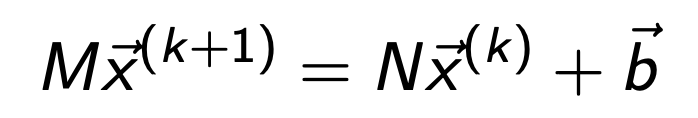
e(k+1) - e(k)를 진행하면, 재밌는 사실은 다음의 G = M-1N matrx을 계속 곱해주는 관계식이 도출된다.

등비수열 꼴이므로, 초기 e(0)에 G를 k번 곱한 것이 바로 e(k)

여기서 G = M-1N이 n개의 독립적인 eigen vectors and values가 있다고 가정을 하면,
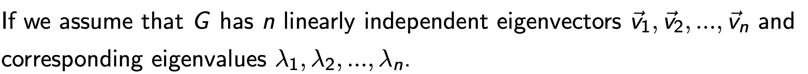
e(0)의 차원은 n x 1 이므로 위, n개의 기저벡터로 표현가능하다.
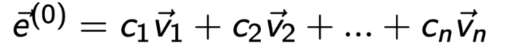
Eigen vector, value성질을 이용하면
Gv1 = λ1v1 이므로,
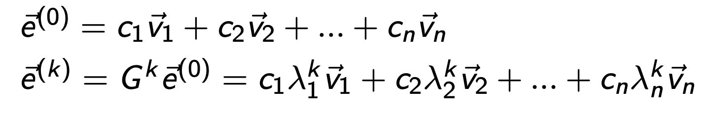
우리의 목표는 e(k) -> 0 이므로,
위 e(k) 식은 가장 큰 abs(eigen value) < 1이면 달성 가능하다는 사실을 의미한다.
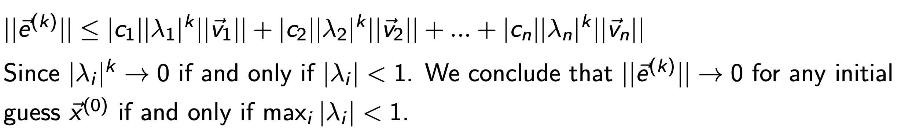